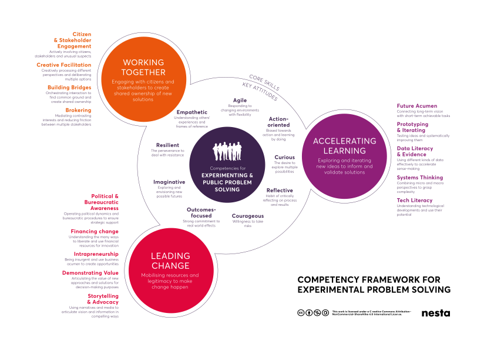
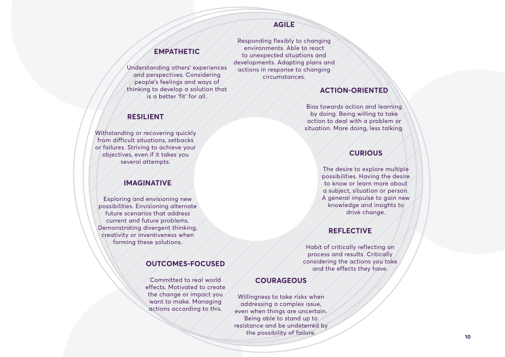

Nesta's competency framework
Where this comes from
Nesta, the UK innovation foundation, published the competency framework for experimenting and public problem solving in 2017 and a guide to it in 2019.
We need to go beyond methods and tools to focus on the core set of attitudes and skills that underpin them. That's what our Competency Framework is about.
The guide's own team activity, "Mapping a team's innovation competencies", is what this session follows: five skills and three attitudes each, one superpower, a shared heat map, then discussion.
The framework

Three parts
- The central circle
- The aim: solving public problems through experimenting.
- The attitudes
- Nine settled ways of thinking and feeling that surround the aim; they change slowly, over years.
- Working together
- Engaging citizens and stakeholders to create shared ownership of new solutions.
- Accelerating learning
- Exploring, testing and developing new ideas to inform and validate solutions.
- Leading change
- Mobilising resources and legitimacy to make change happen.
The nine attitudes

How we'll use it today
It isn't a checklist and it isn't an assessment.
Nobody has all of these; Nesta says they have never met anyone who does.
The question is what the team holds between us, not who has most.
Pick your name, then wait for the silent mapping to start.